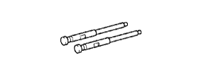

РУЛЕВОЕ КОЛЕСО > СНЯТИЕ > Подготовка

 | 09950-50013 | Набор универсальных съемников С |
 | (09951-05010) | Траверса 150 |
 | (09952-05010) | Подвижный блок |
 | (09953-05020) | Центровочный болт 150 |
|  | (09954-05011) | Захват № 1 |
| Изоляционная лента | - |
| Метка, нанесенная краской | - |
| Динамометрический ключ | - |
 | 09010-3C120 | Набор торцевых головок "Torx" | |
 | (09013-1C120) | Торцевой ключ с головкой "TORX" T30 T-типа | |
 | 09082-00040 | Электрический диагностический прибор TOYOTA | |
 | (09083-00150) | Комплект проводов для диагностического прибора |